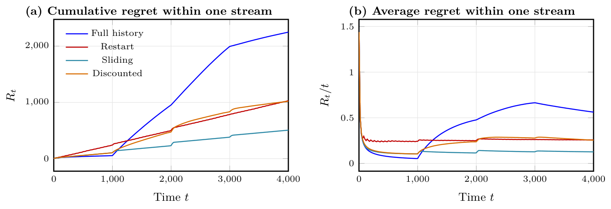
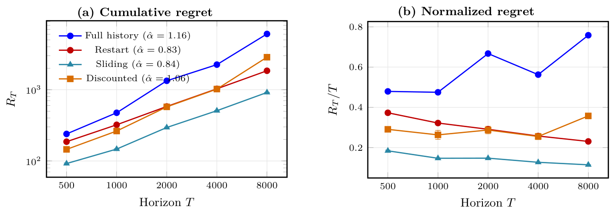
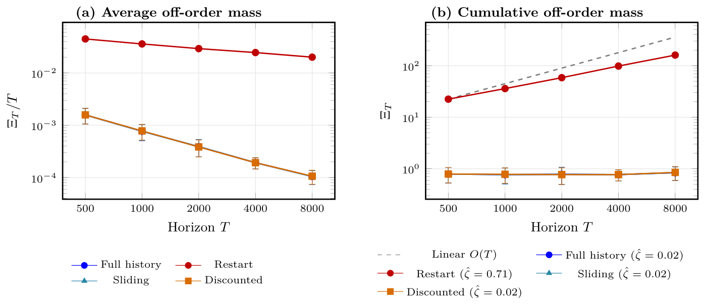

Online Distributional Prediction via Latent Cluster Geometry Under Drift and Corruption
Most online forecasters predict a number: the next value, or its mean. The mean does not say whether the data is tightly bunched, split into several modes, or changing shape. Nor does it say how far one bad observation can drag the forecast. We show how to predict the whole distribution of the next observation online, with a regret guarantee that holds when the distribution drifts and some observations are adversarially corrupted.
The predictor places a quasi-posterior over cluster configurations, sets of centres of any size, and forecasts by averaging the distributions those configurations imply. A restart schedule stops stale data from dominating. Measured in Wasserstein distance, its regret splits into separate terms for model complexity, corruption and drift.
The problem
At round \(t\) a clean point is drawn from the current law, \(x_t \sim P_t\), which may change over time. The learner never sees it. It sees a corrupted copy
\[ \tilde x_t = x_t + C_t, \qquad \|\tilde x_t - x_t\|_2 \le \delta, \]where the corruption may depend on the past and on the current point, but not on the future, and \(\Lambda_T = \sum_t \mathbf{1}\{C_t \neq 0\}\) counts the corrupted rounds. Before each round the learner outputs a predictive distribution, scored against the truth with the Wasserstein-1 distance:
\[ \mathrm{Regret}(T) = \sum_{t=1}^{T} W_1\big(p(x_t \mid \tilde x_{1:t-1}),\; P_t\big). \]\(W_1\) is the cost of moving probability mass to turn one distribution into the other. It also bounds the error in the mean, \(\|\mathbb{E}_P X - \mathbb{E}_Q X\| \le W_1(P, Q)\), so controlling it controls the mean forecast too. The reverse does not hold.
Ingredient 1: distributions from cluster centres
We describe a candidate law by a configuration of centres \(c = (c_1, \dots, c_k)\), where \(k\) itself is unknown. A configuration fits a point well if some centre is close to it, and it predicts with an equal-weight mixture of kernels placed on its centres:
\[ \ell(c, x) = \min_j \|c_j - x\|_2^2, \qquad p(\cdot \mid c) = \frac{1}{k}\sum_{j=1}^{k} K(\cdot,\, c_j). \]The prior covers both the number of clusters and their locations, and prefers fewer clusters, \(q(k) \propto e^{-\eta k}\).
A quasi-posterior instead of a likelihood. A fully Bayesian model would need a correct likelihood for a stream whose law keeps changing. Following quasi-Bayesian clustering, we replace the likelihood with the exponentiated clustering loss accumulated so far, \(S_t(c) = \sum_{s \le t} \ell(c, z_s)\):
\[ \hat\rho_{t+1}(dc) \;\propto\; \exp\big(-\lambda_t\, S_t(c)\big)\,\pi(dc). \]Configurations that have fit the stream well get exponentially more weight, and \(\lambda_t\) sets how sharply. The forecast averages the configurations' predictions:
\[ \hat p_{t+1} = \int p(\cdot \mid c)\,\hat\rho_{t+1}(dc) \;\approx\; \frac{1}{M}\sum_{m=1}^{M} p\big(\cdot \mid c^{(m)}\big). \]The quasi-posterior lives on a space whose dimension changes with \(k\), so we sample it with reversible-jump MCMC: birth and death moves add or remove a centre, and ordinary moves shift them. Learning happens in configuration space, and accuracy is measured in data space.
Ingredient 2: forgetting on purpose
Drift and corruption make old data misleading for different reasons. A corrupted point distorts the score directly. Under drift, even clean points from long ago describe a law that no longer holds. All our variants share the model, prior and loss, and differ only in which past losses enter the score. Full history keeps all of them. Restart resets the score at fixed times. A sliding window keeps the last \(H\). Discounting fades them geometrically,
\[ S^{\text{dc}}_{t-1}(c) = \sum_{s=1}^{t-1} \rho^{\,t-1-s}\,\ell(c, z_s), \qquad \rho = e^{-1/H}, \]so that \(H\) is the effective memory length in both cases. The main theorem is proved for the restarted predictor.

What the guarantee says
The analysis splits each round's error into what corruption costs and what tracking a moving target costs:
\[ W_1\big(p(\cdot \mid \tilde x_{1:t-1}), P_t\big) \;\le\; \underbrace{W_1\big(p(\cdot \mid \tilde x_{1:t-1}),\, p(\cdot \mid x_{1:t-1})\big)}_{\text{corruption}} \;+\; \underbrace{W_1\big(p(\cdot \mid x_{1:t-1}),\, P_t\big)}_{\text{tracking}}. \]Drift is measured by how far the true law travels, \(A^{\text{OT}}_T = \sum_{t=2}^{T} W_2^2(P_{t-1}, P_t)\). For the restarted predictor, the total regret is bounded by three kinds of terms. A complexity term from the PAC-Bayes argument is paid once per restart segment. A corruption term grows with the number of corruptions inside each segment. A drift term is driven by \(A^{\text{OT}}_T\), plus a charge for changes in the best number of clusters. Short segments limit how much stale or corrupted data builds up, but pay the complexity cost more often. The restart length is the knob between the two.
The guarantee has conditions. It assumes bounded support and regularity of the latent cluster representation, and the restart schedule has to be tuned with bounds on drift and corruption. A sublinear total number of corruptions is not enough on its own; the theory needs a suitable bound within each segment.
Results
The experiments use controlled synthetic streams where the true law is known. Results are averaged over ten paired seeds, so the four memory rules see exactly the same data.
Regret over longer horizons. When the law keeps moving to places it has never been, full-history regret grows almost linearly with the horizon (fitted exponent 1.16). Restart and sliding window grow sub-linearly (0.83 and 0.84), and their normalised regret falls as the horizon grows. These fits describe the horizons we tested, from 500 to 8,000 steps. They are not asymptotic rates.

Choosing the number of clusters. The quasi-posterior also has to decide how many clusters there are. With two true clusters, restarting puts the most mass on the wrong number, because each restart begins again from the prior over \(k\). Full history, sliding window and discounting keep this off-order mass small, and its cumulative total grows very slowly.

Within one stream. Figure 3 above follows a single stream with drift and corruption. Until the first shift the four rules behave the same. After it, full history keeps paying for stale data, while localized memory recovers and stays low.
Limitations
- Finite horizons. The experiments illustrate the mechanism; they do not establish the asymptotic theorem.
- Tuning. The restart schedule the theory needs depends on bounds on drift and corruption that may not be known in practice.
- Model family. The kernel bandwidth and equal weights are fixed. Whether a cluster geometry suits a given stream is a modelling choice, and the remaining mismatch appears as a separate approximation term in the bound.
Takeaway
Forecasting a distribution online is not much harder than forecasting a point, if the hypotheses live in a structured space and the learner forgets at the right rate. A quasi-posterior over cluster geometry gives a forecast in data space, and restarting it on schedule turns drift and corruption into separate, bounded costs.
Citation
@article{mahla2026online,
title = {Online Distributional Prediction via Latent Cluster Geometry Under Drift and Corruption},
author = {Mahla, Navyansh and Chanda, Prateek and Ramakrishnan, Ganesh},
journal = {Transactions on Machine Learning Research},
year = {2026}
}